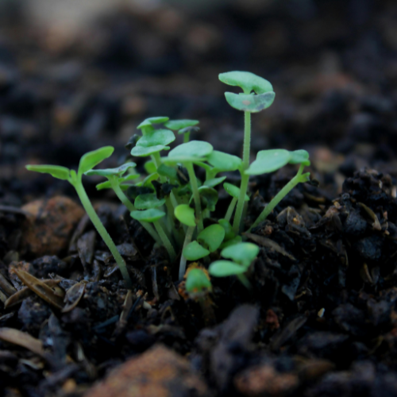

Strengthens soil, boosts fertility, conserves water,
and supports robust growth—ideal for gardens, lawns, and green spaces.
HumiSoil® Smart Coffee Blend
A nutrient-rich, pelletised blend enriched with
recycled coffee grounds for a nitrogen boost. Reduces compaction, enhances water retention, and
promotes healthy growth.
Stimulates beneficial microbes to boost soil health and
root growth. Supports efficient nutrient absorption for stronger gardens and landscapes.
Rich, enhanced soil with HumiSoil® for deep roots and
better water retention. Perfect for productive gardens and green lawns.
Revitalises lawns with nutrients, improves soil
structure, reduces water needs, and strengthens roots for greener, healthier turf.
Treated with microbe stimulants, protects soil,
conserves moisture, and supports plant growth while encouraging a healthy ecosystem.
Premium biochar enhanced with microbial catalysts to
improve soil structure and nutrient efficiency. Ideal for building long-lasting, healthy soils.
Treated with microbe stimulants, filters water, reduces
erosion, and regenerates soil without harmful plastics. Perfect for community spaces, gardens, and
soil restoration.